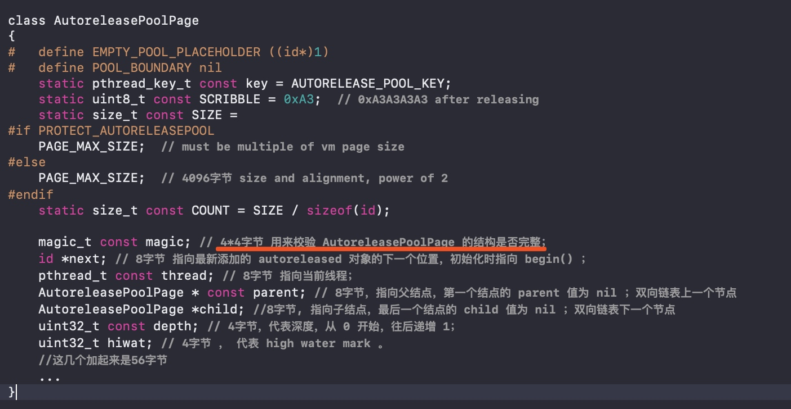

- App启动后，苹果在主线程 RunLoop 里注册了两个 Observer，其回调都是 _wrapRunLoopWithAutoreleasePoolHandler()。
- 第一个 Observer 监视的事件是 Entry(即将进入Loop)，其回调内会调用 _objc_autoreleasePoolPush() 创建自动释放池。其 order 是-2147483647，优先级最高，保证创建释放池发生在其他所有回调之前。
- 第二个 Observer 监视了两个事件： BeforeWaiting(准备进入休眠) 时调用_objc_autoreleasePoolPop() 和 _objc_autoreleasePoolPush() 释放旧的池并创建新池；Exit(即将退出Loop) 时调用 _objc_autoreleasePoolPop() 来释放自动释放池。这个 Observer 的 order 是 2147483647，优先级最低，保证其释放池子发生在其他所有回调之后。
- 在主线程执行的代码，通常是写在诸如事件回调、Timer回调内的。这些回调会被 RunLoop 创建好的 AutoreleasePool 环绕着，所以不会出现内存泄漏，开发者也不必显示创建 Pool 了。
也就是说AutoreleasePool创建是在一个RunLoop事件开始之前(push)，AutoreleasePool释放是在一个RunLoop事件即将结束之前(pop)。
AutoreleasePool里的Autorelease对象的加入是在RunLoop事件中，AutoreleasePool里的Autorelease对象的释放是在AutoreleasePool释放时。
Autorelease对象什么时候释放？
在没有手动添加 AutoreleasePool的情况下,
**Autorelease对象是在当前的 RunLoop 迭代结束的时候释放的 **
原因:
系统在每个 RunLoop 迭代中都加入了自动释放池的 Push 和 Pop
AutoreleasePool原理


- AutoreleasePool并没有单独的结构,而是由若干个 AutoreleasePoolPage 以双向链表的形式结合而成(分别对应图中的 parent 和 child 指针)
- AutoreleasePool是按线程一一对应的(结构中的 thread 指向当前线程)
- AutoreleasePoolPage 每个对象会开辟 4096 个字节内存(一页虚拟内存的大小)除了上面的实例变量所占的空间,剩下的空间都用来存储 Autorelease对象
- 上面的 id *next 指针作为游标指向栈顶最新 add 进来的 Autorelease对象的下一个位置
- 一个 AutoreleasePoolPage 的空间被沾满时,会创建一个新的 AutoreleasePoolPage 对象,连接链表,后来的 Autorelease对象在新的 page 加入
所以若当前线程中只有一个 AutoreleasePoolPage 对象,并记录了很多 Autorelease对象地址时,内存:

图中的情况，这一页再加入一个autorelease对象就要满了（也就是next指针马上指向栈顶），这时就要执行上面说的操作，建立下一页page对象，与这一页链表连接完成后，新page的next指针被初始化在栈底（begin的位置），然后继续向栈顶添加新对象。
向一个对象发送- autorelease消息，就是将这个对象加入到当前AutoreleasePoolPage的栈顶next指针指向的位置
这一步只是把 Autorelease对象加入到了自动释放池,还并没有释放
真正释放时刻
每当进行一次objc_autoreleasePoolPush调用时，runtime向当前的AutoreleasePoolPage中add进一个哨兵对象，值为0（也就是个nil），那么这一个page就变成了下面的样子：

objc_autoreleasePoolPush的返回值正是这个哨兵对象的地址，被objc_autoreleasePoolPop(哨兵对象)作为入参，于是：
- 根据传入的哨兵对象地址找到哨兵对象所处的page
- 在当前page中，将晚于哨兵对象插入的所有autorelease对象都发送一次- release消息，并向回移动next指针到正确位置
- 补充2：从最新加入的对象一直向前清理，可以向前跨越若干个page，直到哨兵所在的page
刚才的objc_autoreleasePoolPop执行后，
 最终变成了下面的样子:
最终变成了下面的样子:

嵌套的AutoreleasePool
知道了上面的原理，嵌套的AutoreleasePool就非常简单了，pop的时候总会释放到上次push的位置为止，多层的pool就是多个哨兵对象而已，就像剥洋葱一样，每次一层，互不影响。


注意点:
NSAutoRelasePool对象执行销毁时[pool drain]后，自动释放池会把添加到该pool里面的所有OC对象都执行一遍release（retainCount-=1），如果恰好此时retainCount<=0 ，那么系统会自动调用dealloc方法废弃对象。
参考:
https://www.jianshu.com/p/61d8131c6bf3
https://blog.sunnyxx.com/2014/10/15/behind-autorelease/
https://juejin.im/post/5d7765756fb9a06af82503b6